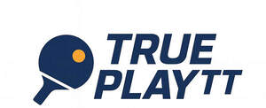
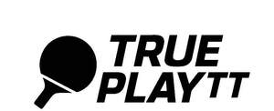

Trade Mark Journal No.2025/034 22 August 2025
UK00004248174 12 August 2025 (25,28,41)
Mark 1

Mark 2

- Class 25
- Sports clothing; Clothing for sports; Sports garments.
- Class 28
- Sporting articles and equipment; Sporting articles; Gymnastic and sporting articles; Nets for sporting purposes; Toy sporting apparatus; Balls being sporting articles.
- Class 41
- Sporting services; Sporting activities; Organising of sporting activities and of sporting competitions; Sporting education services; Sporting and recreational activities; Entertainment services relating to sporting events; Ticket procurement services for sporting events; Handicapping services for sporting events; Production of sporting events; Sporting and cultural activities; Cultural and sporting activities; Sporting results services; Entertainment services in the nature of sporting events; Provision of sporting events; Entertainment, sporting and cultural activities; Provision of sporting competitions; Coaching services for sporting activities; Providing will-call ticket services for entertainment, sporting and cultural events; Arranging of sporting events; Organisation of sporting competitions and sports events; Organising of sporting events, competitions and sporting tournaments; Sporting competitions (Arranging of -); Production of sporting events for television; Services for the provision of sporting facilities; Organisation of events for cultural, entertainment and sporting purposes; Provision of sporting facilities; Ticket information services for sporting events; Handicapping for sporting events; Organisation of sporting events; Production of sporting events for radio; Organising of sporting events; Organising sporting events; Providing facilities for sporting events, sports and athletic competitions and awards programmes; Rental of equipment for use at sporting events; Country clubs providing sporting facilities; Organisation of sporting competitions; Sporting competitions (Organising of -); Organisation of sporting activities and competitions; Organising of sporting contests; Organization of sporting events; Organising of sporting activities and competitions; Organising of sporting activities or competitions.
Peter Canavan